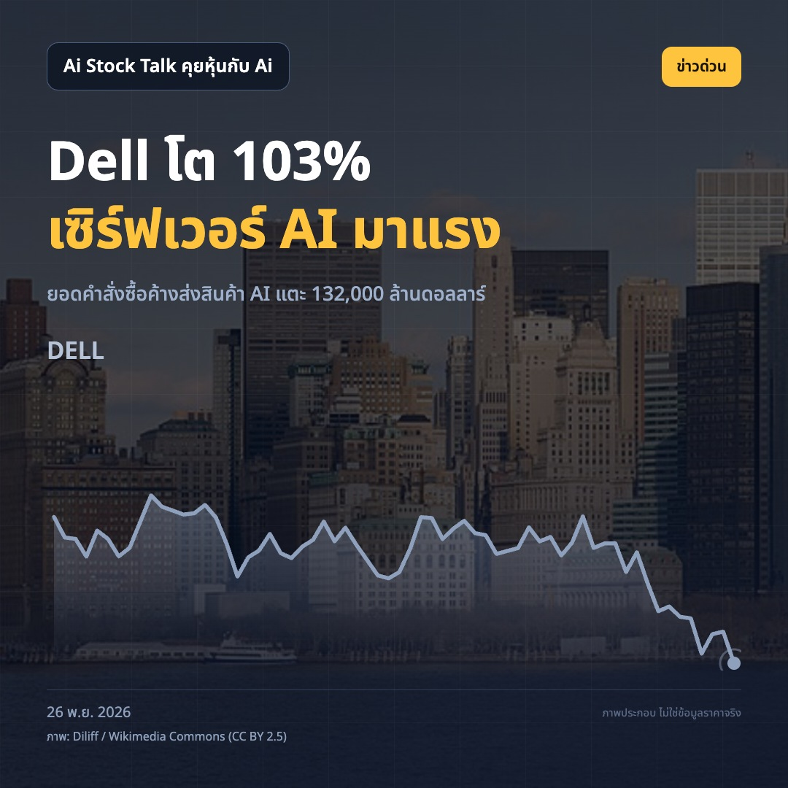
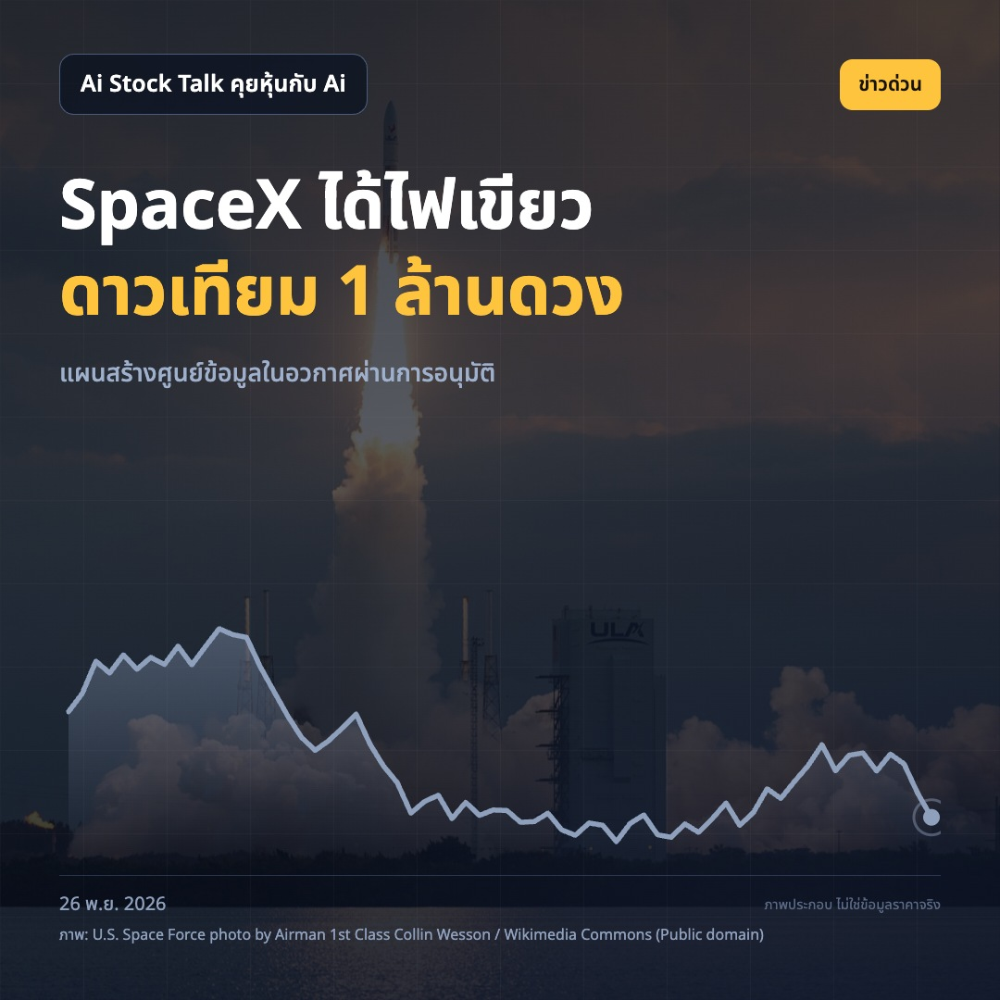
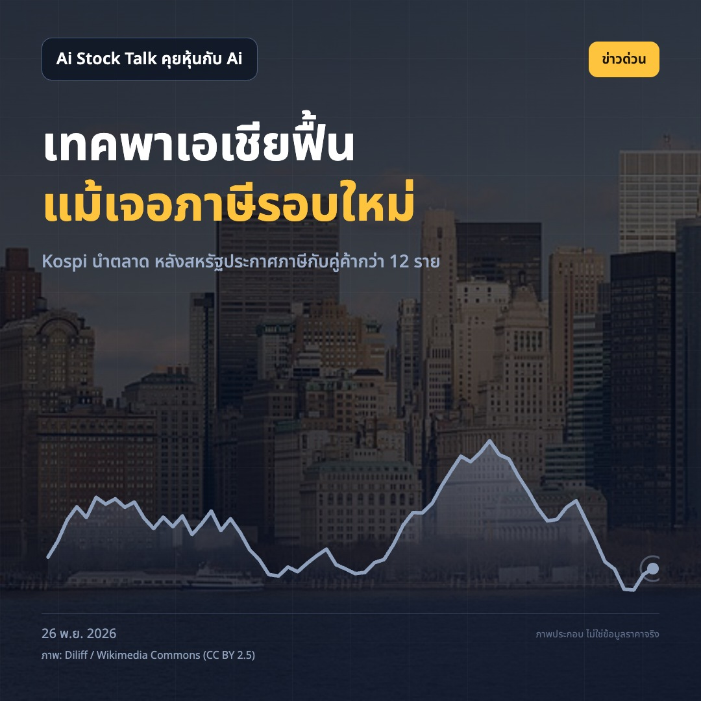
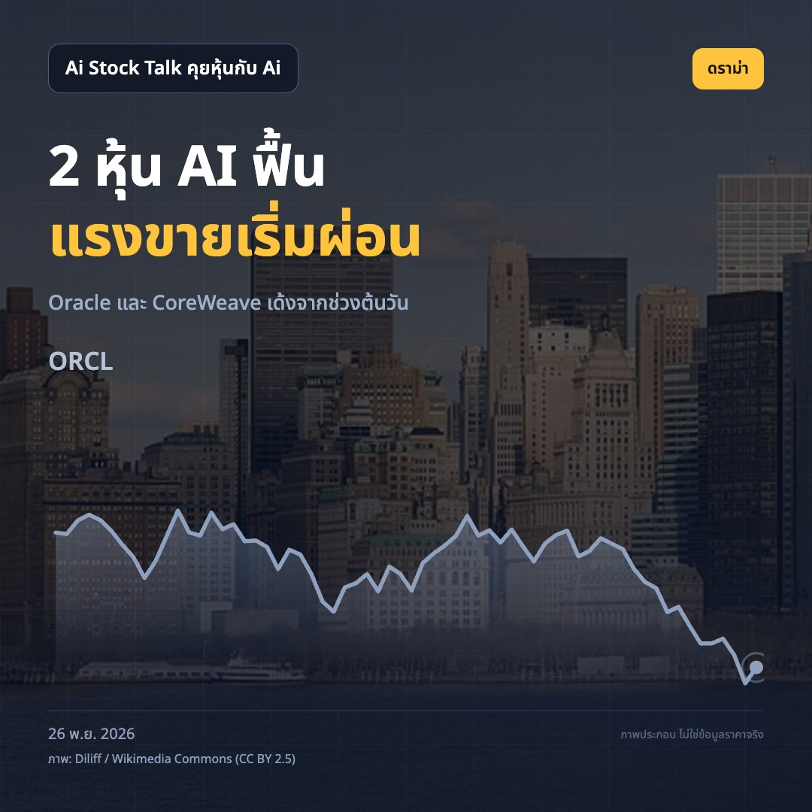
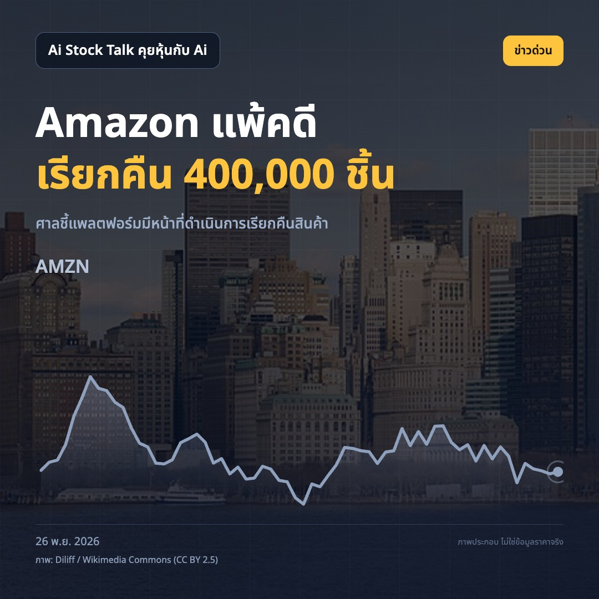

1. S&P เตือนอาจลดอันดับเครดิต Nvidia หลังมองความเสี่ยงด้านการบริหารสูงขึ้น

S&P อาจลดอันดับเครดิต Nvidia 1 ขั้น
S&P Global Ratings ระบุว่าอาจลดอันดับเครดิตบริษัทลง หลังประเมินว่าความเสี่ยงด้านการบริหารและธรรมาภิบาลเพิ่มขึ้น อีกแหล่งข่าวระบุว่าอันดับเครดิตที่อาจลดลงไปอยู่ที่ AA- ขณะนี้ยังเป็นการพิจารณา ไม่ใช่การประกาศลดอันดับแล้ว
ทำไมต้องสน: คนที่ถือหุ้น Nvidia หรือกองทุนที่มีหุ้นนี้ควรจับตาการประเมินความเสี่ยงของบริษัทควบคู่กับเรื่องความต้องการชิป AI เพราะประเด็นที่สถาบันจัดอันดับยกขึ้นมาครั้งนี้อยู่ที่การบริหาร
ถ้าถือหุ้น Nvidia อยู่ คุณจะติดตามเรื่องนี้ต่อจากข้อมูลใด?
ที่มา: https://www.cnbc.com/2026/11/26/nvidia-market-governance-risk.html https://techcrunch.com/2026/11/25/sp-considers-nvidia-credit-downgrade-over-governance-and-key-man-risks/
Nvidia #หุ้นเทค #ลงทุน
ภาพ: Dicklyon / Wikimedia Commons (CC BY-SA 4.0)
2. Dell รายได้พุ่ง 103% ท่ามกลางความต้องการเซิร์ฟเวอร์ AI

Dell รายได้พุ่ง 103% ในไตรมาสเดียว
Dell รายงานรายได้รวมไตรมาส 3 ตามปีการเงิน 2027 ที่ 54,937 ล้านดอลลาร์ เพิ่มขึ้น 103% จากปีก่อน และเป็นสถิติใหม่อีกไตรมาส รายได้จากเซิร์ฟเวอร์ AI เพิ่มขึ้นเกือบ 4 เท่า ขณะที่คำสั่งซื้อใหม่ของสินค้าที่เกี่ยวกับ AI ในไตรมาสอยู่ที่ 60,200 ล้านดอลลาร์ ยอดคำสั่งซื้อค้างส่งของสินค้ากลุ่มนี้เพิ่มเป็น 132,000 ล้านดอลลาร์
ทำไมต้องสน: ตัวเลขคำสั่งซื้อช่วยให้คนถือหุ้นเทคเห็นว่าความต้องการอุปกรณ์สำหรับ AI ยังส่งต่อมาถึงผู้ขายเซิร์ฟเวอร์เพียงใด และมีงานรอส่งมอบมากแค่ไหน
ถ้าติดตามหุ้นกลุ่ม AI คุณให้น้ำหนักกับรายได้ที่เกิดแล้วหรือคำสั่งซื้อค้างส่งมากกว่า?
ที่มา: https://www.blognone.com/node/152258
Dell #เซิร์ฟเวอร์AI #หุ้นเทค
ภาพ: Diliff / Wikimedia Commons (CC BY 2.5)
3. สหรัฐอนุมัติแผน SpaceX ส่งดาวเทียมศูนย์ข้อมูลขึ้นสู่อวกาศ

SpaceX ได้ไฟเขียวแผนดาวเทียมสูงสุด 1 ล้านดวง
หน่วยงานกำกับดูแลสื่อสารของสหรัฐอนุมัติแผนของ SpaceX ที่จะใช้ดาวเทียมเป็นศูนย์ข้อมูลในอวกาศ โครงการชื่อ Starmind วางจำนวนดาวเทียมไว้สูงสุด 1 ล้านดวง โดยมีหน่วยประมวลผลอยู่ในดาวเทียมและสื่อสารระหว่างกัน แผนนี้เคยถูก Amazon และกลุ่มอื่นคัดค้าน ก่อนหน่วยงานกำกับดูแลให้การอนุมัติ
ทำไมต้องสน: หากติดตามการลงทุนด้าน AI และโครงสร้างพื้นฐาน ข่าวนี้เพิ่มอีกแนวทางที่ต้องจับตาว่าการประมวลผลจะถูกนำไปไว้ที่ใด แต่การอนุมัติแผนยังไม่ใช่ตัวเลขการติดตั้งจริง
คุณคิดว่าศูนย์ข้อมูลในอวกาศควรถูกประเมินจากสิ่งใดก่อน?
ที่มา: https://www.blognone.com/node/152256 https://www.cnbc.com/2026/11/25/spacex-fcc-satellite-approval.html
SpaceX #ศูนย์ข้อมูล #AI
ภาพ: U.S. Space Force photo by Airman 1st Class Collin Wesson / Wikimedia Commons (Public domain)
4. หุ้นเทคเอเชียฟื้น เกาหลีใต้นำตลาดแม้สหรัฐประกาศภาษีใหม่

สหรัฐเล็งคู่ค้ากว่า 12 ราย แต่หุ้นเทคเอเชียฟื้น
ตลาดหุ้นเอเชียปรับขึ้นจากการฟื้นตัวของหุ้นเทค โดยดัชนี Kospi ของเกาหลีใต้เป็นผู้นำการปรับขึ้น ความเคลื่อนไหวเกิดหลังทำเนียบขาวประกาศภาษีชุดใหม่ที่มุ่งไปยังคู่ค้ารายใหญ่มากกว่า 12 ราย รายงานระบุว่านักลงทุนดูเหมือนจะมองผ่านข่าวภาษีรอบนี้ไปก่อน ขณะที่แรงซื้อในหุ้นเทคช่วยพยุงตลาดเอเชีย
ทำไมต้องสน: คนไทยที่ถือกองทุนหุ้นเอเชียหรือหุ้นเทคต่างประเทศกำลังเห็นตลาดตอบรับสองเรื่องพร้อมกัน ทั้งการฟื้นของกลุ่มเทคและความเสี่ยงจากภาษี จึงควรดูองค์ประกอบของกองทุนที่ถืออยู่
ในพอร์ตของคุณ ข่าวภาษีหรือทิศทางหุ้นเทคมีน้ำหนักมากกว่ากัน?
ที่มา: https://www.cnbc.com/2026/11/26/stock-markets-today-.html
หุ้นเอเชีย #หุ้นเทค #กองทุน
ภาพ: Diliff / Wikimedia Commons (CC BY 2.5)
5. Oracle และ CoreWeave ฟื้นจากแรงขายช่วงต้นวัน

2 หุ้น AI ฟื้น หลังเปิดวันด้วยแรงขาย
Oracle และ CoreWeave อยู่ในกลุ่มหุ้นเทคที่ฟื้นตัวจากการปรับลงช่วงต้นการซื้อขายวันพุธ รายงานระบุว่าแรงขายที่ดูรุนแรงในช่วงแรกผ่อนลงก่อนตลาดปิด และหุ้นเทคบางตัวจึงฟื้นตาม ข้อมูลในรายการข่าวนี้ไม่ได้ระบุเปอร์เซ็นต์การเปลี่ยนแปลงของหุ้นทั้งสอง จึงยังสรุปขนาดการฟื้นจากตัวเลขไม่ได้
ทำไมต้องสน: คนที่ถือหุ้นหรือกองทุนเกี่ยวกับ AI อาจเห็นราคาเคลื่อนไหวต่างกันมากระหว่างต้นวันกับช่วงใกล้ปิด การดูเพียงภาพช่วงแรกอาจไม่สะท้อนการซื้อขายทั้งวัน
เวลาตามหุ้น AI คุณดูราคาช่วงเปิดตลาดหรือรอภาพก่อนปิดตลาด?
ที่มา: https://www.marketwatch.com/story/oracles-stock-sinks-toward-a-3-year-low-as-the-ai-trade-continues-to-unravel-d4698d77?mod=mw_rss_topstories
Oracle #CoreWeave #หุ้นAI
ภาพ: Diliff / Wikimedia Commons (CC BY 2.5)
6. Amazon ต้องรับผิดชอบการเรียกคืนสินค้ากว่า 400,000 ชิ้น

Amazon ต้องเรียกคืนสินค้าอันตรายกว่า 400,000 ชิ้น
ศาลสหรัฐตัดสินให้หน่วยงานคุ้มครองผู้บริโภคชนะคดีที่ Amazon ยื่นคัดค้านคำสั่งเรียกคืนสินค้า คดีเกี่ยวกับสินค้าจากผู้ขายรายอื่นในบริการ Fulfilled by Amazon ซึ่งหน่วยงานระบุว่ามีความเสี่ยงร้ายแรง รวมถึงเครื่องตรวจจับคาร์บอนมอนอกไซด์ที่บกพร่องและไดร์เป่าผมที่ไม่มีระบบป้องกันไฟดูด ศาลรับเหตุผลว่า Amazon มีสถานะเป็นผู้จัดจำหน่าย จึงมีหน้าที่ดำเนินการเรียกคืนสินค้า
ทำไมต้องสน: สำหรับคนที่ติดตามหุ้นแพลตฟอร์มขายของออนไลน์ คำตัดสินนี้ทำให้ความรับผิดชอบต่อสินค้าจากผู้ขายรายอื่นเป็นประเด็นที่ต้องตามต่อ แม้ข่าวนี้ไม่ได้ระบุต้นทุนที่ Amazon จะต้องจ่าย
คุณคิดว่าแพลตฟอร์มควรรับผิดชอบสินค้าของผู้ขายรายอื่นถึงระดับใด?
ที่มา: https://www.theverge.com/tech/1042870/amazon-recall-order-cpsc
Amazon #หุ้นเทค #ค้าปลีกออนไลน์
ภาพ: Diliff / Wikimedia Commons (CC BY 2.5)